|
Nitin Kamra I am a Research Scientist at Reality Labs Research, Meta. I work on policy learning for dexterous manipulation with humanoid robots. Before this, I was working on developing agentic AI and reinforcement learning algorithms for assistive agents to provide guidance to users in performing day-to-day tasks. I graduated with a Ph.D. in Computer Science and an MS in Intelligent Robotics from the University of Southern California (USC) in May 2021, advised by Yan Liu. My research focused on prediction and learning in multi-agent settings. I also hold an undergraduate degree in Electrical Engineering from IIT Delhi. |


{kind=link}
ResearchI'm interested in understanding "understanding" itself, aiming to develop architectures for artificial agents to achieve human-level understanding. My research spans deep reinforcement learning, continual learning, robotics, reasoning, and planning. |
Publications |
Learning and Planning for Embodied Agents |
|
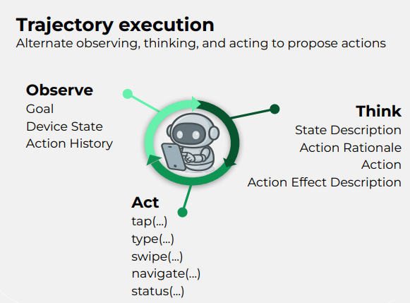
|
DigiData: Training and Evaluating General-Purpose Mobile Control Agents
Yuxuan Sun, Manchen Wang, Shengyi Qian, William R. Wong, Eric Gan, Pierluca D'Oro, Alejandro Castillejo Munoz, Sneha Silwal, Pedro Matias, Nitin Kamra, Satwik Kottur, Nick Raines, Xuanyi Zhao, Joy Chen, Joseph Greer, Andrea Madotto, Allen Bolourchi, James Valori, Kevin Carlberg, Karl Ridgeway and Joseph Tighe ArXiv, 2025 We introduce DigiData, a large-scale, high-quality, diverse, multi-modal dataset designed for training mobile control agents. Additionally, we present DigiData-Bench, a benchmark for evaluating mobile control agents on real-world complex tasks. |
|
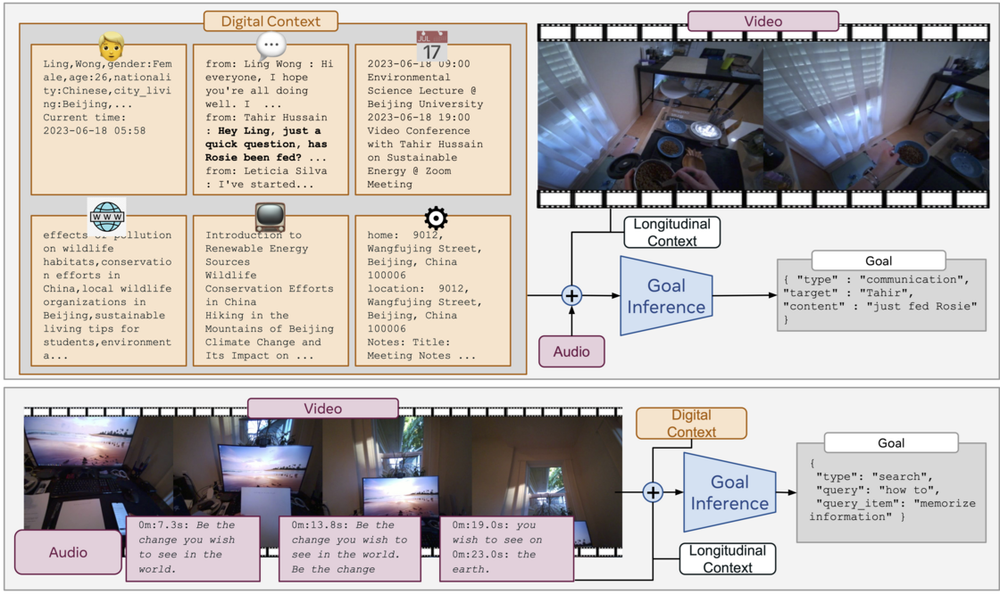
|
Benchmarking Egocentric Multimodal Goal Inference for Assistive Wearable Agents
Vijay Veerabadran, Fanyi Xiao, Nitin Kamra, Pedro Matias, Joy Chen, Caley Drooff, Brett D Roads, Riley Williams, Ethan Henderson, Xuanyi Zhao, Kevin Carlberg, Joseph Tighe and Karl Ridgeway (Spotlight) Advances in Neural Information Processing Systems (NeurIPS), 2025 This work focuses on creating a strong benchmark to measure progress in solving the egocentric multimodal goal inference problem for assistive wearable agents using vision-language models (VLMs). Webpage | ArXiv | Paper | Code | Dataset | Poster | NeurIPS talk | Bibtex |
|
|
Language-based Hierarchical Goal Decomposer and API Executor
Nitin Kamra Reality Labs Research, Meta, 2024 Language-based Hierarchical Goal Decomposer and API Executor. |
|
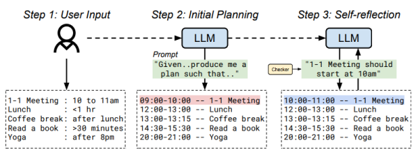
|
Human-Centered Planning
Yuliang Li, Nitin Kamra, Ruta Desai and Alon Halevy ArXiv, Nov 2023 We develop an LLM-based planner (LLMPlan) extended with the ability to self-reflect on its output. |
|
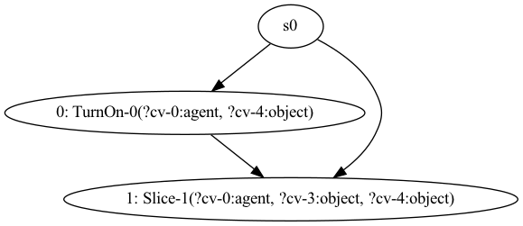
|
Zero-shot Compositional Generalization with Conjugate Task Graphs
Nitin Kamra and Rohan Chitnis Reality Labs Research, Meta, 2023 Zero-shot Compositional Generalization with Conjugate Task Graphs. |
|
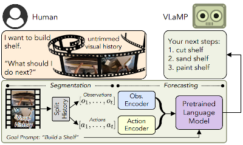
|
Pretrained Language Models as Visual Planners for Human Assistance
Dhruvesh Patel, Hamid Eghbalzadeh, Nitin Kamra, Michael Louis Iuzzolino, Unnat Jain and Ruta Desai International Conference on Computer Vision (ICCV), Oct 2023 A short version appears in ICCV Workshop on Assistive Computer Vision and Robotics (ACVR), Oct 2023 We show that pretrained Vision Language Models can act as visual planners for human assistance. |
|
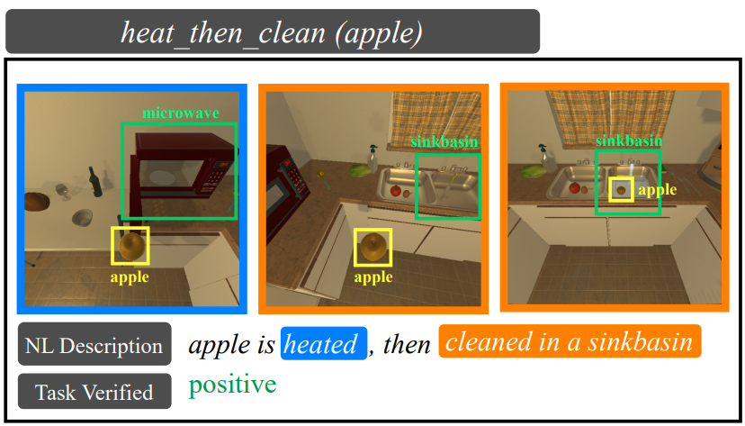
|
EgoTV: Egocentric Task Verification from Natural Language Task Descriptions
Rishi Hazra, Brian Chen, Akshara Rai, Nitin Kamra and Ruta Desai International Conference on Computer Vision (ICCV), Oct 2023 We propose a benchmark and a synthetic dataset called Egocentric Task Verification (EgoTV) to enable egocentric agents to understand everyday tasks. The goal in EgoTV is to verify the execution of tasks from egocentric videos based on the natural language description of these tasks. |

|
Action Dynamics Task Graphs for Learning Plannable Representations of Procedural Tasks
Weichao Mao, Ruta Desai, Michael Louis Iuzzolino and Nitin Kamra AAAI Workshop on User-Centric Artificial Intelligence for Assistance in At-Home Tasks, Feb 2023 Given video demonstrations and paired narrations of an at-home procedural task, we present an approach to extract the underlying task structure - relevant actions and their temporal dependencies - via action-centric task graphs. |
|
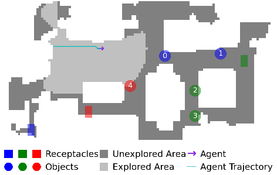
|
Effective Baselines for Multiple Object Rearrangement Planning in Partially Observable Mapped Environments
Engin Tekin, Elaheh Barati, Nitin Kamra and Ruta Desai AAAI Workshop on User-Centric Artificial Intelligence for Assistance in At-Home Tasks, Feb 2023 Our goal is to enable home-assistive intelligent agents to efficiently plan for rearrangement under partially observed, but mapped environments. We investigate both monolithic and modular deep reinforcement learning methods for planning in this setting. |
{kind=link}
Learning in Multiagent Systems |
|
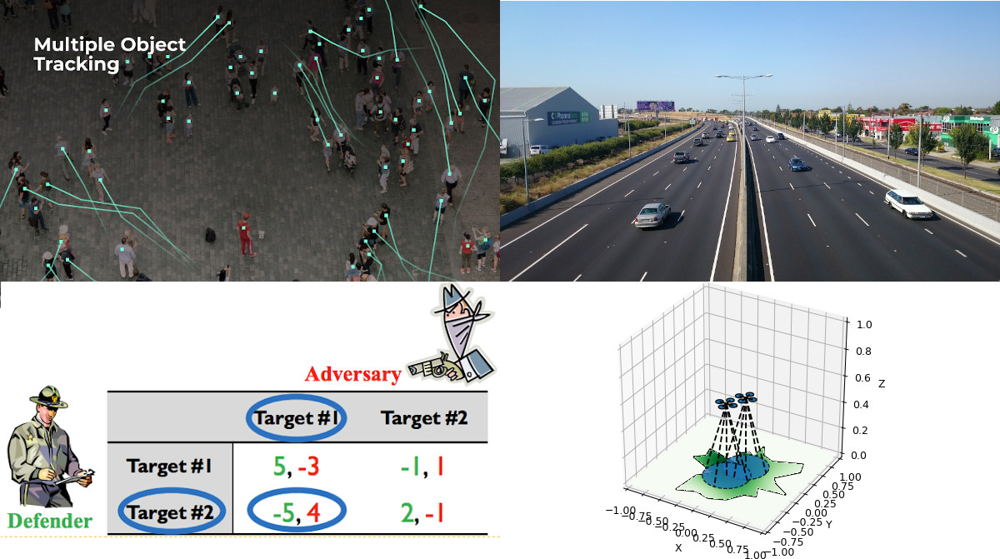
|
Machine Learning in Interacting Multi-agent Systems
Nitin Kamra PhD Thesis (University of Southern California), Jul 2021 I propose methods to advance the state-of-the-art for several multi-agent prediction, control and learning problems. |
|
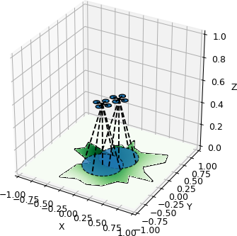
|
Gradient-based Optimization for Multi-resource Spatial Coverage Problems
Nitin Kamra and Yan Liu Conference on Uncertainty in Artificial Intelligence (UAI), Jul 2021 A short version appears in NeurIPS workshop on Interpretable Inductive Biases and Physically Structured Learning, 2020 We propose the coverage gradient theorem, which provides a gradient estimator for a broad class of spatial coverage objectives using a combination of Newton-Leibniz theorem and implicit boundary differentiation. Our framework approximates the coverage objectives and their gradients using spatial discretization and solves several multi-resource spatial coverage problems efficiently via gradient-based optimization. |

|
Multi-agent Trajectory Prediction with Fuzzy Query Attention
Nitin Kamra, Hao Zhu, Dweep Trivedi, Ming Zhang and Yan Liu Advances in Neural Information Processing Systems (NeurIPS), 2020 A short version appears in Southern California Machine Learning Symposium (SCMLS), 2020 We present an architecture to address the challenge of trajectory prediction for scenes with multiple agents and entities. We model crucial inductive biases of motion, namely, inertia, relative motion, intents and interactions via a relational model to flexibly capture interactions between agents in diverse environments. Specifically, we propose a novel attention mechanism which models interactions by making continuous-valued (fuzzy) decisions and learning the corresponding responses. Our architecture demonstrates significant gains over existing state-of-the-art models in diverse domains such as human crowds, freeway traffic, sports trajectories and physics. |

|
DeepFP for Finding Nash Equilibrium in Continuous Action Spaces
Nitin Kamra, Umang Gupta, Kai Wang, Fei Fang, Yan Liu and Milind Tambe Conference on Decision and Game Theory for Security (GameSec), 2019 A short version appears in International Conference on Autonomous Agents and Multiagent Systems (AAMAS), 2019 We present DeepFP, an extension of fictitious play for finding nash equilibrium of two-player zero-sum games in continuous action spaces. DeepFP represents players’ best responses via generative neural networks which are highly expressive implicit density approximators and trains them end-to-end in an actor-critic style framework. Paper | AAMAS abstract | Pdf | Bibtex |

|
Policy Learning for Continuous Space Security Games using Neural Networks
Nitin Kamra, Umang Gupta, Fei Fang, Yan Liu and Milind Tambe AAAI Conference on Artificial Intelligence (AAAI), Feb 2018 A short version appears in IJCAI International Workshop on A.I. in Security (IWAISe), Aug 2017 We present OptGradFP, a novel deep learning based approach for continuous space security games, that searches for the optimal defender strategy in a parameterized continuous search space, and can be used to learn policies over multiple game states simultaneously. Paper | Workshop | Workshop pdf | Slides | Bibtex |

|
Combinatorial Problems in Multi-Robot Battery Exchange Systems
Nitin Kamra, T. K. Satish Kumar and Nora Ayanian IEEE Transactions on Automation Science and Engineering (T-ASE), 2018 We present approximation algorithms with heuristics to address combinatorial problems that arise in multirobot delivery systems involving multiple aspects of resource scheduling and path planning that make them more complex than well-known combinatorial problems studied in operations research. |
|
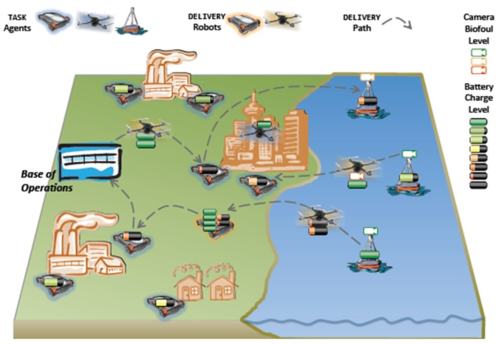
|
A mixed integer programming model for timed deliveries in multirobot systems
Nitin Kamra and Nora Ayanian IEEE International Conference on Automation Science and Engineering (CASE), Aug 2015 We present a solution to enable task robots to operate in long-duration autonmous missions by requesting resources (e.g. batteries) from a distribution center, which can deploy “delivery robots” to fulfill those requests. We address the scheduling problem with: (a) multiple incoming time-bound requests from the task robots, (b) priorities on task robots, (c) relaxed scheduling when available resources are scant, and (d) dynamic re-routing of delivery robots. The problem is posed as a variant of the Vehicle Routing Problem with Time Windows, and solved as a Mixed Integer Quadratic Program using a branch and bound based solver. |
|
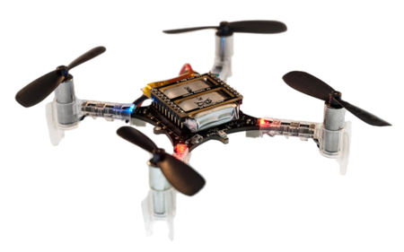
|
RF-Based Relative Localization for Robot Swarms
Wolfgang Hoenig and Nitin Kamra University of Southern California (USC), 2015 We present a simple gradient-descent based localization approach based on detection of RF signals from robots, which scales efficiently to large number of robots in a distributed swarm. |
Machine Learning for Healthcare |

|
Treatment Recommendation with Preference-based Reinforcement Learning
Nan Xu, Nitin Kamra and Yan Liu IEEE International Conference on Big Knowledge (ICBK), 2021 A short version also appears in NeurIPS workshop on Deep Reinforcement Learning, 2020 We present an open simulation platform to model the evolution of two diseases, namely Cancer and Sepsis, and individuals' reactions to the received treatment. We experimentally show that preference-based reinforcement learning, where the reward function is itself learned based on treatment goals without expert demonstrations, achieves high survival rate and low side effects, with inferred rewards being highly correlated to treatment goals. |
|
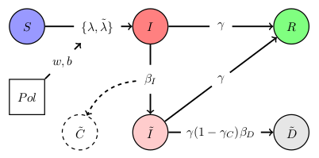
|
PolSIRD: Modeling Epidemic Spread under Intervention Policies
Nitin Kamra, Yizhou Zhang, Sirisha Rambhatla, Chuizheng Meng and Yan Liu Journal of Healthcare Informatics Research (J-HIR), Jun 2021 We present a mathematical model, namely PolSIRD, which represents evolution of epidemics without assuming full observability and while accounting for the effects of under-reporting and intervention policies. Our model applied to the spread of COVID-19 in the United States, outperforms the methods employed by the CDC in predicting the spread, and correctly predicts the second wave of the epidemic as a result of lifting the intervention policies prematurely. |
General Machine Learning |
|
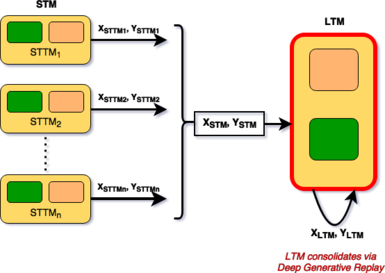
|
Deep Generative Dual Memory Network for Continual Learning
Nitin Kamra, Umang Gupta and Yan Liu ArXiv, May 2018 We derive inspiration from human memory to develop an architecture capable of learning continuously from sequentially incoming tasks, while averting catastrophic forgetting. We present: (i) a dual memory architecture emulating the complementary learning systems (hippocampus and the neocortex) in the human brain, (ii) memory consolidation via generative replay of past experiences, and (iii) improved performance retention on challenging tasks even for low capacity models. Our architecture displays many characteristics of the mammalian memory and provides insights on the connection between sleep and learning. |

|
DynGEM: Deep Embedding Method for Dynamic Graphs
Nitin Kamra*, Palash Goyal*, Xinran He and Yan Liu IJCAI International Workshop on Representation Learning for Graphs (ReLiG), Aug 2017 DynGEM: Deep Embedding Method for Dynamic Graphs. |

|
Towards Zero-shot Dialog Act Classification
Nitin Kamra, Daniel Elkind and Angeliki Metallinou Alexa Natural Understanding, Amazon, 2020 We explore learning compact representations of task-oriented dialogs, called “dialog acts” (DAs), which comprise of a de-lexicalized grammar based on the general language patterns appearing in dialog interactions and compactly encode information about the intents and entities referenced in a conversation. We train a recurrent deep learning module custom designed for mapping conversations to a sequence of dialog acts and achieve remarkable performance in the in-domain setup and reasonable success at generalizing in the zero-shot setup. |
|
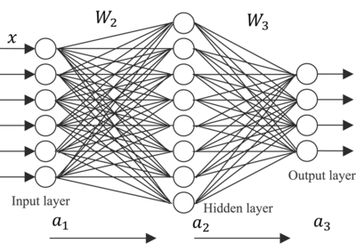
|
Parallel Gradient Descent for Multilayer Feedforward Neural Networks
Nitin Kamra, Palash Goyal, Sungyong Seo and Vasilis Zois University of Southern California (USC), 2016 We implement parallelized gradient descent to train multilayer feedforward neural networks via various modes: (a) parallelly processing examples across threads, (b) parallelizing matrix operations for a single training example using threads, (c) a BLAS parallelized version, and (d) a CUDA implementation on a GPU. All implementations are compared for speedup obtained across network architectures and increasing problem sizes, along with a comparison with the deep learning library: Theano. |
|
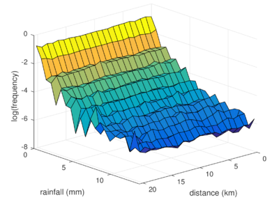
|
Predicting Rainfall with Polarimetric Radar Data
Nitin Kamra and James Preiss Kaggle Competition, 2015
|
Other Projects |
|
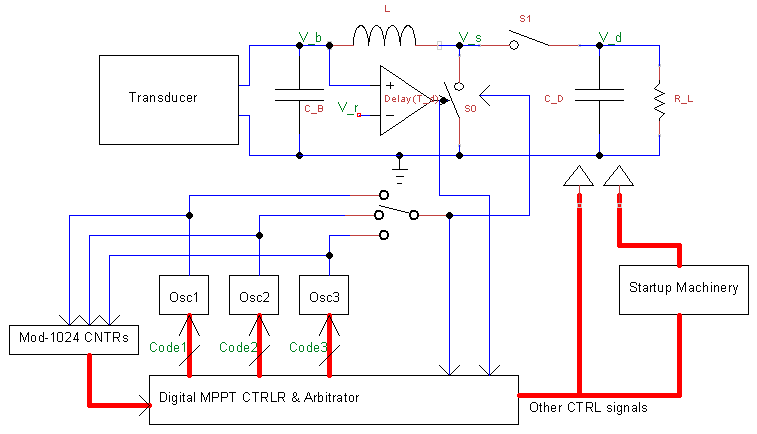
|
Output Power Maximization in Energy Harvesting Applications
Nitin Kamra and Shouribrata Chatterjee Undergraduate Thesis (IIT Delhi), 2014 I present exploratory research for increasing the efficiency of an Energy Harvesting Integrated Circuit architecture. |

|
ROSHNI: Indoor Navigation System for Visually Impaired
Nitin Kamra, Devesh Singh, Dhruv Jain and M. Balakrishnan IIT Delhi, 2012
|

|
Elementary Iterative Methods and the Conjugate Gradient Algorithm
Nitin Kamra High Performance Computing, Indo-German Winter Academy, Dec 2012
|
Patents |
|
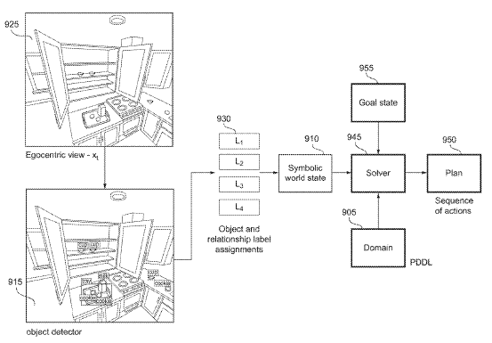
|
Task Optimization in an Extended Reality Environment
Ruta Parimal Desai and Nitin Kamra US Patent Application 20230342677, Filed Apr 21, 2023 Reality Labs Research, Meta We present a goal-conditioned agent to enhance a user's ability and efficiency in performing tasks in an extended reality environment. The agent observes egocentric image input from a head-mounted device, generates a symbolic task state, plans a sequence of actions to achieve the desired task goal, and renders visual aid on the display of the head-mounted device to guide the user. |

|
Correction of Speech Recognition on Repetitive Queries
Pinar Donmez Ediz, Ranjitha Kulkarni, Shawn Chang and Nitin Kamra US patent 10,650,811, Issued May 12, 2023 Microsoft AI and Research, Summer 2017 We present a system to improve speech recognition by detecting and correcting speech recognition errors during a speech session. The system recognizes repeated speech commands from a user in a session that are similar or identical to each other. To correct these repeated errors, the system creates a customized language model that is then utilized by the language modeler to produce a refined prediction of the meaning of the repeated speech commands. |
Teaching
|
Awards
|
|
Adapted from the coolest template |